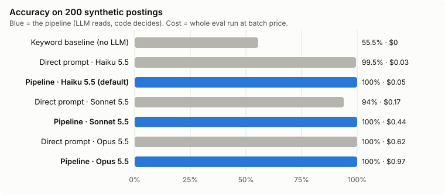

Posting Triage
Reads a job posting and answers APPLY, FLAG, SKIP, or DEAD, with the line from the posting that decided it.
A posting that was never a fit still costs a tailored resume and an application, and usually ends in an automatic rejection. Keyword filters miss the fields that decide fit (role level, degree, graduation window, years of experience, location) because postings state them in sentences, not titles. Some links are dead, though a closed posting can still point to other open roles. And when you ask an LLM "should I apply?", it answers in its own words, so you can't check its reason against the posting.
So the LLM only reads. It fills in a form with an exact quote for each field, code checks that every quote is in the posting, and plain rules make the decision.
How it works

- Check the link is live. Greenhouse, Lever, Ashby, and Workday links go through their job-board APIs; other pages open in headless Chromium. A removed posting comes back DEAD with the company's careers page. A page that can't be read is FLAG, never a guessed DEAD.
- Claude fills in role type, level, degree, graduation window, experience, location, and track, each with the exact quote it came from, or nothing if the posting doesn't say.
- Code checks each quote is really in the posting. A missing quote gets one retry. If it's still missing, that field can't decide anything.
- Rules compare the fields with the applicant's profile. Every rule runs, any SKIP beats any FLAG, and the verdict names the field and quote that decided it.
Results
I tested three approaches with three Claude models on 200 synthetic postings, through the Batch API, on Oct 24, 2026. Each posting is generated from a target verdict, a deciding field, and a hand-reviewed phrase library, so the right answer is known before any model sees it.

| Approach | Apply precision | Apply recall | Accuracy | Right reason | Cost |
|---|---|---|---|---|---|
| Keyword baseline (no LLM) | 54/98 = 55% | 54/70 = 77% | 111/200 = 56% | – | $0 |
| Direct prompt · Haiku 5.5 | 70/70 = 100% | 70/70 = 100% | 199/200 = 99.5% | 199/200 = 99.5% | $0.03 |
| Pipeline · Haiku 5.5 | 70/70 = 100% | 70/70 = 100% | 200/200 = 100% | 200/200 = 100% | $0.05 |
| Direct prompt · Sonnet 5.5 | 67/70 = 96% | 67/70 = 96% | 188/200 = 94% | 187/200 = 94% | $0.17 |
| Pipeline · Sonnet 5.5 | 70/70 = 100% | 70/70 = 100% | 200/200 = 100% | 200/200 = 100% | $0.44 |
| Direct prompt · Opus 5.5 | 70/70 = 100% | 70/70 = 100% | 200/200 = 100% | 200/200 = 100% | $0.62 |
| Pipeline · Opus 5.5 | 70/70 = 100% | 70/70 = 100% | 200/200 = 100% | 200/200 = 100% | $0.97 |
Apply precision is how many of the postings an approach said to apply to it should have. Right reason means the verdict and the deciding field are both right. In the direct prompt, the LLM gives the verdict itself; it exists only as a comparison. Cost covers the whole run (200 synthetic plus 5 real postings) at batch price.
Keyword rules got 56%. They have no FLAG, so every posting that needed a human look counted as wrong. The pipeline scored 100% on all three models. The direct prompt ranged from 94% on Sonnet to 100% on Opus, and most of Sonnet's misses applied the rules in the wrong order, which in the pipeline is tested code. Haiku is the default because it tied the best score at $0.05 for the whole run, against $0.97 for Opus.
On this benchmark, accuracy alone doesn't justify the pipeline, since the direct prompt on Opus also scored 100%. The pipeline earns its place elsewhere. Its quotes are checked against the posting (all 377 of the direct prompt's quotes were accurate too, but nothing checked them), its rules can't change between models, and a wrong answer points to one misread field that can be tested and fixed.
The scores are an upper bound, because the postings are synthetic. Only 5 real postings are hand-labeled. Every LLM approach got all 5 right and the baseline got 3, but all 5 are SKIPs, so they say nothing about apply precision.
Real postings
These are 16 of the 149 real postings I cached, picked to cover every verdict, with every result shown as it came back. S&P Global is FLAG but should be DEAD, because its removed Workday page didn't return the "not found" the check looks for. The first run also SKIPped Heliux, because the parser read "HQ (San Francisco, CA)" as a city called "HQ (San Francisco", a format the synthetic postings never use. I fixed the parser and re-ran that posting.
16 real postings, run live on Oct 29, 2026 with claude-haiku-5-5.
- APPLYHeliux · Software Engineer - Internship - Summer 2027
every rule passed - FLAGFreeform · Software Engineering Intern - Summer 2027
degree: "Currently enrolled in a bachelor’s degree in computer science, computer engineering, or electrical engineering; Advanced …" - FLAGPatreon · Software Engineer Intern
graduation: "students graduating between December 2027 and June 2028" - APPLYThe Exploration Company · Summer 2027 Internship - Software
every rule passed - APPLYPylon · Software Engineer New Grad
every rule passed - APPLYHarvey · Software Engineer New Grad
every rule passed - DEADRhombus · Software Engineer Intern
the posting was removed careers page - APPLYCybernetic Labs · Full-Stack Software Engineer New Grad - Product
every rule passed - SKIPGeneral Motors · 2027 Summer Intern - Machine Learning Intern - Autonomous Vehicles: Software Validation - Master's
degree: "Currently enrolled & in the process of obtaining a Master's Degree" - FLAGS&P Global · Software Engineer - Summer Intern 2027
role type: "The page you are looking for doesn't exist." - SKIPFigma · PhD Intern - Software Engineer - Graphics - 2027
degree: "Current enrollment as a 4th or 5th year senior PhD student pursuing a PhD in …" - SKIPAmazon · SDE II - OIH
role level: "SDE II, OIH" - SKIPSnowflake · AI Research Scientist New Grad - Agents & Reinforcement Learning
degree: "PhD in Computer Science, Machine Learning, Artificial Intelligence, or a closely related field" - SKIPTalos · Software Engineer Intern - RFQ
location: "New York; Local to NYC HQ; hybrid-friendly environment" - SKIPVeeam Software · Machine Learning Intern - AI
degree: "Currently pursuing a Master’s degree or PhD" - SKIPWaymo · Machine Learning Intern - Computer Vision
degree: "Currently enrolled in a PhD program"
Deployment

This diagram is wider than the page. Scroll it sideways or open it full size.

One Docker image runs both the command-line tool and a FastAPI REST API. It runs on AWS Lambda (arm64, 2 GB) behind a function URL, with the image in ECR, the API key, token, and profile in Parameter Store, and logs in CloudWatch. A script deploys it from my Mac with temporary credentials, so no long-lived AWS keys exist. Removing Chromium's unused media libraries took the registry's vulnerability scan from 337 findings to 0. A new copy of the function takes about 16 s to start and about 30 s for its first Chromium page; after that, a triage takes 3 to 11 s.

The API is private. Every triage spends money on the Claude key and runs a browser on a server, so this page shows recorded results instead of calling it. Its guardrails:

- A bearer token, compared in constant time. The server won't start without one.
- 10 requests a minute per token in each running copy of the function (at most 2 copies), a 90 s timeout, and at most 2 triages at once.
- Only public http(s) URLs on ports 80 and 443, with every resolved address checked. Chromium's traffic goes through a filtering proxy that checks redirects, iframes, and page resources too, so the cloud metadata address (169.254.169.254) gets a 400.
Over 1,500 unit tests run with no network or API calls, plus 6 in a real headless browser and a 10-check smoke test of the Docker image. GitHub Actions runs the unit tests on Python 3.11 and 3.13 and builds the arm64 image on every push.